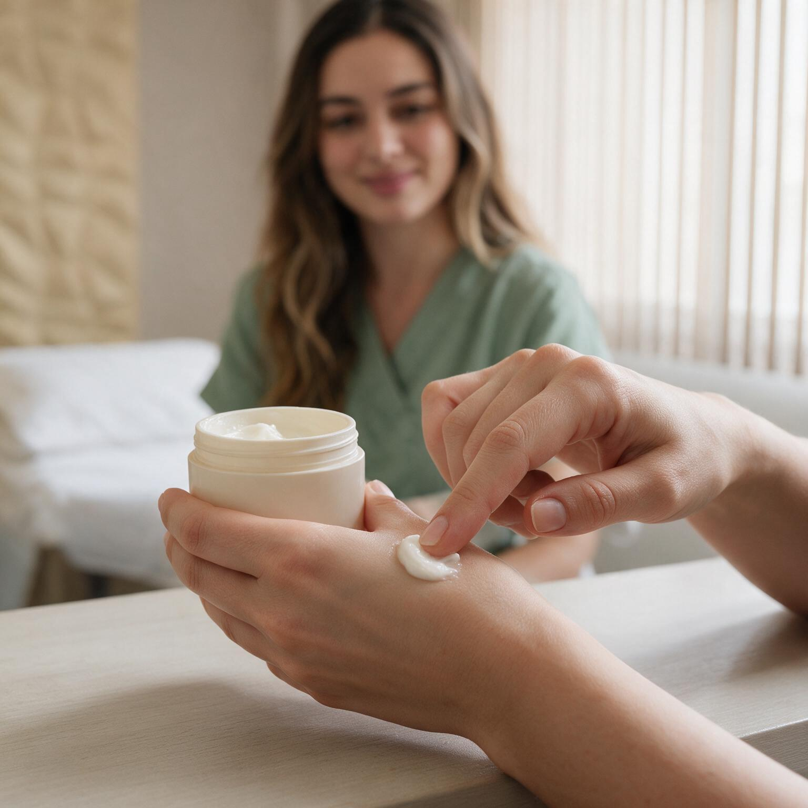

Fisioterapia pélvica, dermato funcional e saúde da mulher — atendimentos em Niterói e Icaraí, com cuidado integrado que olha para a função, o conforto e o bem-estar, não só para a aparência.
Dor pélvica, incontinência, pós-parto e reeducação do assoalho — com avaliação individual.
Pele tratada como função: cicatrizes, pós-operatório, saúde do tecido — não só estética.
Preparo do corpo para gestação, parto e pós-parto, com movimento consciente.
Consciência corporal, bem-estar e vitalidade em todas as fases da vida.
Sou fisioterapeuta e trabalho com o corpo feminino de forma integrada — não só a aparência, mas a função, o conforto e o bem-estar. Muita coisa que a gente aprendeu a aceitar como "normal" (dor, desconforto, vergonha) é comum, mas não é normal — e se trata.
Atendo em Niterói e Icaraí: avaliação individual, plano próprio para cada corpo e uma escuta que não tem pressa.
Conta o que está sentindo, sem formulário frio. Eu respondo pessoalmente.
Uma sessão para entender seu corpo e sua história. Nenhum protocolo pronto.
Objetivos claros, técnica com acolhimento e reavaliações ao longo do caminho.
Você aprende a escutar e cuidar do próprio corpo — o objetivo é a sua liberdade.
Nada de protocolo frio: o atendimento em Niterói e Icaraí é pensado para o corpo relaxar antes mesmo da sessão começar — no seu ritmo, no seu espaço.
O toque é técnico e cuidadoso — cada sessão respeita o seu tempo e o seu limite.
Conversar no WhatsApp
Não achou a sua dúvida? Me chama no WhatsApp — eu mesma respondo.
Perguntar no WhatsAppNão deve doer. Todo o trabalho respeita o seu limite e o seu tempo — a avaliação é conversada passo a passo, e nada acontece sem o seu consentimento.
É comum, mas não é normal — e tem tratamento. A perda urinária costuma responder muito bem à reeducação do assoalho pélvico.
Pode — e ajuda muito. O acompanhamento prepara o corpo para o parto e o pós-parto, sempre integrado ao seu pré-natal.
Depende do seu corpo e da sua queixa — por isso tudo começa com a avaliação individual. Cada plano é próprio, com reavaliações ao longo do caminho.
Atendo em Niterói e Icaraí / RJ. Os detalhes de local são combinados no agendamento pelo WhatsApp.
Vamos conversar. A primeira avaliação é o espaço para entender o que o seu corpo precisa — sem julgamento, sem pressa.
Agendar pelo WhatsApp